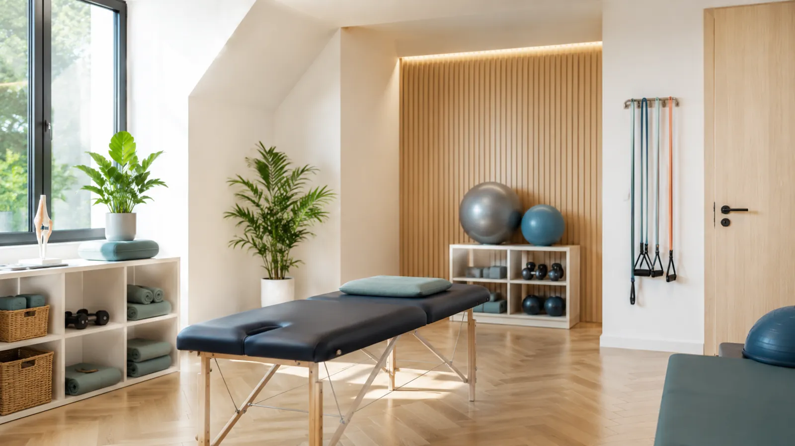
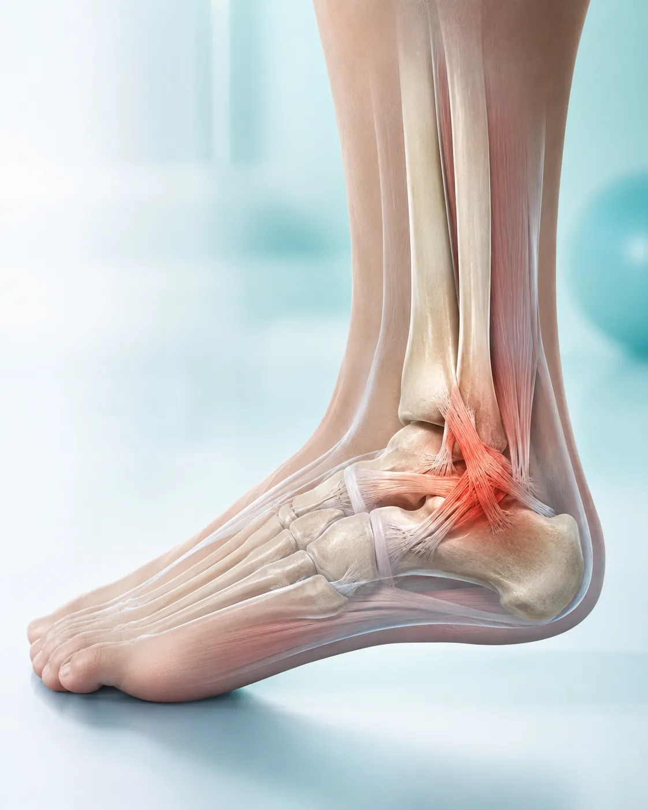
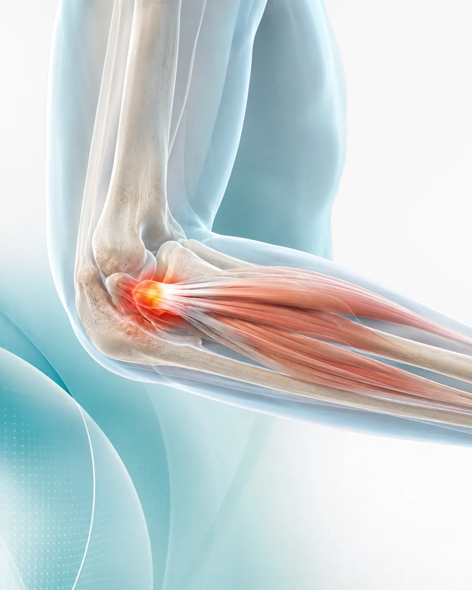
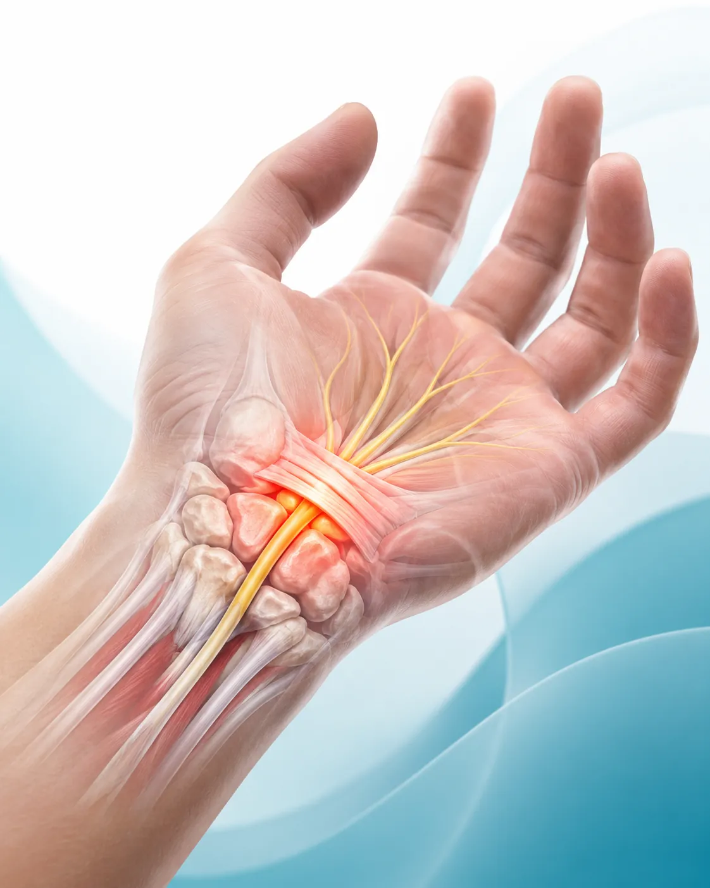
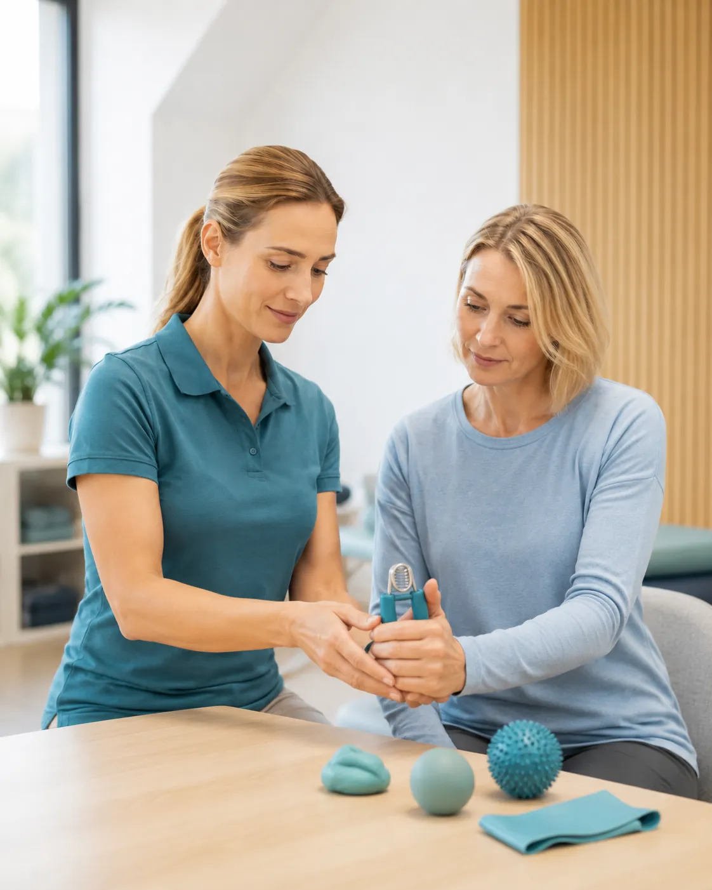
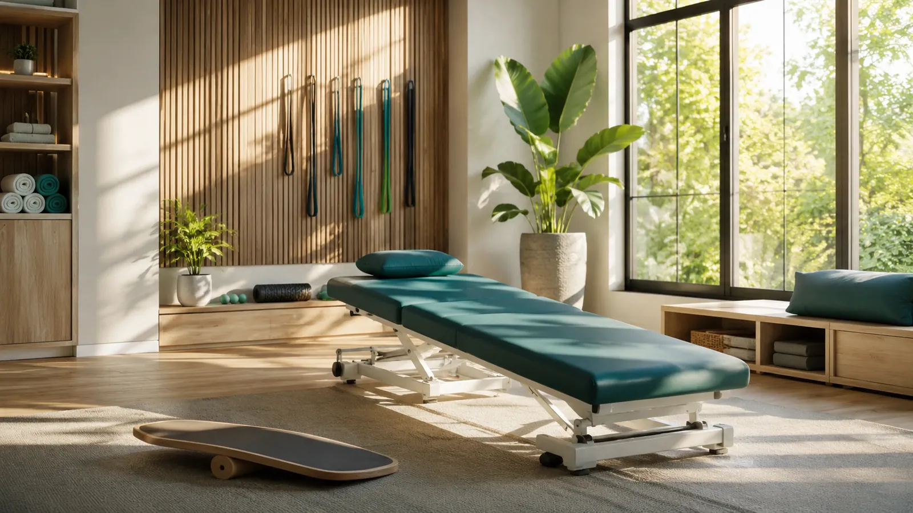
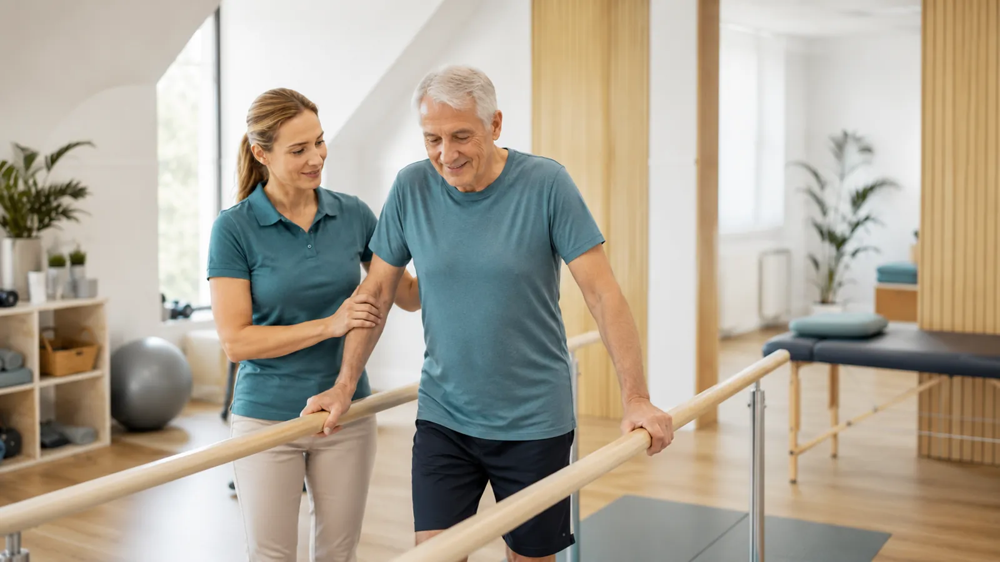
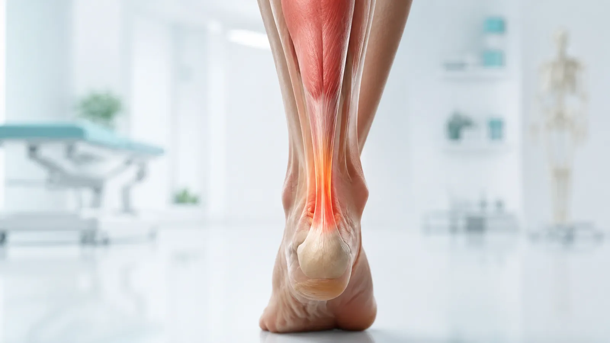
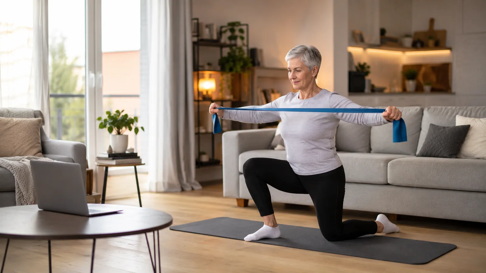
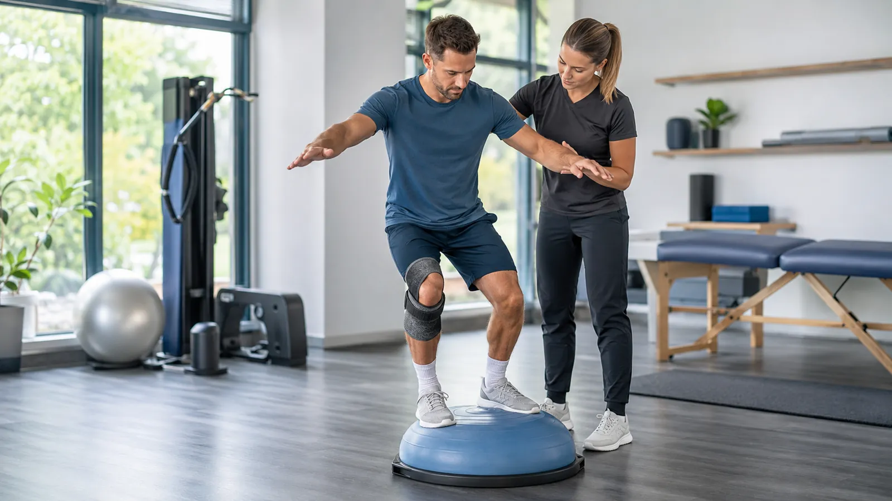

Warstwa 01
Skóra: wygląd
To, co pacjent widzi w pierwsze dwie sekundy. Decyduje, czy zostanie, czy wróci do wyników wyszukiwania. Właśnie dlatego ta strona wygląda tak, jak wygląda.

01 Strony internetowe dla gabinetów fizjoterapii
Gabinet bez strony istnieje tylko dla tych, którzy już Cię znają. Robimy stronę, którą znajdzie także ten, kto szuka pierwszy raz. W Google i w ChatGPT.
Od 1200 zł netto · Masz już stronę? Utrzymanie do 50% taniej
02Diagnoza
Boli go bark. Bierze telefon i pyta: „fizjoterapeuta, moje miasto”. Pyta Google. Coraz częściej pyta ChatGPT albo Gemini. Jeśli nie masz strony, nie ma Cię w żadnej z tych odpowiedzi. Jest tam ktoś inny.
Działa, dopóki działa. Jeden ruch na rynku i nie masz skąd wziąć nowych pacjentów.
Gdzie parking, ile trwa wizyta, co zabrać, jak dojechać. Codziennie, między zabiegami.
Abonament idzie co miesiąc, a strona wygląda jak z 2014 roku i nie przynosi ani jednego telefonu.
03Nasze podejście
Wiesz to lepiej niż ktokolwiek: ból w barku nie zawsze siedzi w barku. Ze stroną jest identycznie. Ładny wygląd to skóra. Pod spodem musi być reszta, inaczej nic nie działa.
To, co pacjent widzi w pierwsze dwie sekundy. Decyduje, czy zostanie, czy wróci do wyników wyszukiwania. Właśnie dlatego ta strona wygląda tak, jak wygląda.

Strona, która ładuje się dłużej niż trzy sekundy na telefonie, traci połowę odwiedzających. Zanim cokolwiek przeczytają. Nasze strony ważą mniej niż jedno zdjęcie z telefonu.

Struktura, opisy, wizytówka firmy, treść pisana pod to, jak ludzie naprawdę pytają. Bez tego nawet najładniejsza strona jest niewidzialna.

ChatGPT, Gemini, Perplexity i Claude odpowiadają dziś na pytania, które kiedyś szły do Google. Piszemy stronę tak, żeby miały co cytować, kiedy ktoś zapyta o fizjoterapeutę w Twoim mieście.
04Co dostajesz
Zobaczyłeś ją i doczytałeś do tego miejsca. Dokładnie ten poziom robimy dla Twojego gabinetu, tylko z Twoimi zdjęciami i Twoimi zabiegami.
Cennik, dojazd, parking, czas trwania wizyty, przygotowanie. Pacjent czyta i nie dzwoni w środku zabiegu.
Piszemy treść tak, żeby wyszukiwarki ją zrozumiały, a modele językowe miały co zacytować, kiedy ktoś zapyta o fizjoterapeutę w Twoim mieście.
Masz już stronę i płacisz za nią co miesiąc? Pokaż fakturę. W większości przypadków schodzimy z tym kosztem do połowy.
→Kadry, z których budujemy strony




05Efekt
Przychodzi przygotowany, w odpowiednim ubraniu, o właściwej godzinie i pod właściwy adres. Nie dzwoni z pytaniem, gdzie zaparkować. Ty robisz swoje, a nie obsługę infolinii.


06Nasi klienci
organizacja wizyt i automatyczne przypomnienia
Współpraca pozwoliła nam znacznie uporządkować obsługę pacjentów. Wcześniej część przypomnień wysyłaliśmy ręcznie, co zabierało sporo czasu i czasami po prostu nam umykało. Po wdrożeniu systemu pacjenci automatycznie otrzymują wiadomości dotyczące wizyt, a my mamy lepszy porządek w grafiku. Duży plus za indywidualne podejście i dopasowanie rozwiązania do sposobu, w jaki pracuje nasz gabinet.
nowoczesna strona i więcej zapytań od klientów
Nowa strona wygląda profesjonalnie i zdecydowanie lepiej prezentuje nasze usługi. Klienci łatwiej znajdują najważniejsze informacje i częściej kontaktują się z nami bezpośrednio ze strony. Współpraca przebiegła konkretnie, sprawnie i bez niepotrzebnego komplikowania.
przedstawienie oferty w prosty i zrozumiały sposób
Największym wyzwaniem było dla nas pokazanie szerokiej oferty w taki sposób, żeby klient od razu rozumiał, czym się zajmujemy i dlaczego warto wybrać właśnie nas. Wcześniejsza strona była mało czytelna i nie oddawała jakości naszych realizacji. Podczas współpracy uporządkowano całą ofertę, zaplanowano strukturę strony i przygotowano rozwiązania, które prowadzą klienta krok po kroku. Efekt końcowy jest nowoczesny, ale jednocześnie prosty i dopasowany do naszej branży. Doceniamy również szybki kontakt, cierpliwość przy wprowadzaniu poprawek oraz to, że każda propozycja była dokładnie wyjaśniona.
automatyzacja powtarzalnych zapytań
Codziennie otrzymywaliśmy wiele podobnych pytań dotyczących dokumentów, terminów i naszej oferty. Wdrożony asystent AI odpowiada klientom na podstawowe pytania i pomaga im szybciej znaleźć potrzebne informacje. Dzięki temu mamy mniej powtarzalnej pracy i możemy skupić się na bardziej wymagających sprawach. Rozwiązanie zostało przygotowane w przemyślany sposób i nie brzmi jak zwykły automat.
pomoc klientom przy wyborze produktów
Chatbot AI usprawnił obsługę klientów w naszym sklepie. Pomaga znaleźć odpowiedni produkt, odpowiada na najczęstsze pytania i jest dostępny również wtedy, kiedy nasz zespół już nie pracuje. Wdrożenie przebiegło sprawnie, a wszystkie nasze uwagi zostały szybko uwzględnione.
dwujęzyczna komunikacja i obsługa klientów zagranicznych
Zależało nam na tym, aby firma była profesjonalnie prezentowana zarówno klientom z Polski, jak i z Niemiec. Potrzebowaliśmy nie tylko dwujęzycznej strony, ale również odpowiednio przygotowanej komunikacji i formularzy kontaktowych. Cały projekt został dobrze przemyślany pod kątem obu rynków. Zwrócono uwagę nie tylko na samo tłumaczenie tekstów, ale także na sposób przedstawienia oferty i oczekiwania klientów zagranicznych. Otrzymaliśmy rozwiązanie, które wygląda profesjonalnie i realnie pomaga nam docierać do nowych odbiorców. Szczególnie cenimy dobry kontakt, elastyczność oraz szybką reakcję na zgłaszane zmiany.
szybki dostęp do informacji dla pacjentów
Pacjenci często kontaktowali się z nami z podobnymi pytaniami dotyczącymi przygotowania do wizyty, dostępnych usług oraz godzin pracy. Nowe rozwiązanie pozwala im szybko uzyskać podstawowe informacje bez konieczności oczekiwania na kontakt z recepcją. Całość została przygotowana z dużą dbałością o poprawność komunikacji i komfort pacjenta. To praktyczne wsparcie zarówno dla naszego zespołu, jak i osób korzystających z naszych usług.
więcej rezerwacji i lepsza prezentacja usług
Strona jest estetyczna, przejrzysta i pasuje do charakteru naszego salonu. Klientki mogą szybko sprawdzić ofertę, zobaczyć przykładowe realizacje i skontaktować się w sprawie terminu. Bardzo dobra współpraca i świetne wyczucie tego, czego potrzebuje nasza branża.
indywidualne podejście i wsparcie po wdrożeniu
Od początku zależało nam na rozwiązaniu dopasowanym do naszej firmy, a nie na gotowym szablonie, który wygląda tak samo jak u wielu innych przedsiębiorstw. Przed rozpoczęciem prac dokładnie omówiono z nami sposób działania firmy, najczęstsze problemy klientów i cele, jakie chcemy osiągnąć. Na każdym etapie wiedzieliśmy, co jest przygotowywane i dlaczego proponowane są konkretne rozwiązania. Po uruchomieniu projektu również mogliśmy liczyć na pomoc, poprawki i wyjaśnienie sposobu działania poszczególnych funkcji. Bardzo cenimy takie podejście, ponieważ nie czuliśmy się pozostawieni sami sobie po zakończeniu wdrożenia.
uproszczenie skomplikowanej oferty
Nasze produkty wymagają dokładnego wyjaśnienia, dlatego standardowa strona z krótkimi opisami nie była wystarczająca. Udało się stworzyć przejrzystą prezentację, która pokazuje różnice między rozwiązaniami i pomaga klientowi lepiej zrozumieć ofertę. Strona buduje większe zaufanie i ułatwia nam prowadzenie rozmów handlowych, ponieważ klienci zgłaszają się już z podstawową wiedzą o produkcie. Efekt jest profesjonalny i zgodny z tym, czego oczekiwaliśmy.
Następna opinia może być Twoja. Zacznij od bezpłatnego sprawdzenia widoczności.
Sprawdź, czy Cię widaćStrony, automatyzacje i asystenci AI dla dziesięciu różnych branż. Twój gabinet dostaje to samo podejście: konkretną rozmowę, jasną cenę i wynik, który widać.
07Cennik
od1200zł netto
Jedna strona, która sprzedaje. Sekcja z ofertą, zabiegi, cennik, dojazd, formularz kontaktowy.
około2000zł netto
Kilka podstron: o gabinecie, zabiegi osobno, cennik, kontakt, blog. Więcej treści to więcej wejść z wyszukiwarki.
do 50% taniej
Przenosimy Twoją stronę do siebie i odświeżamy wygląd. Utrzymanie zwykle schodzi do połowy tego, co płacisz dziś.
Cena zależy od liczby sekcji i zakresu treści. Po krótkiej rozmowie dostajesz konkretną kwotę, nie widełki.
08Pytania, które słyszymy
Właśnie dlatego, że masz pełny grafik, to jest dobry moment. Stronę robi się wtedy, kiedy nie jest potrzebna, żeby była gotowa wtedy, kiedy się okaże potrzebna. Nokia też miała pełny grafik.
Pacjent z polecenia i tak Cię sprawdza. Dostaje numer od znajomego, wpisuje nazwę w telefon i patrzy, co znajdzie. Jeśli nie znajdzie nic, polecenie traci połowę siły.
Sama praca to około dwóch dni roboczych. Reszta zależy od tego, jak szybko odeślesz zdjęcia i teksty. Od Ciebie potrzebujemy jednej rozmowy i materiałów. Nic więcej.
I nie musisz. Utrzymanie, aktualizacje i kopie zapasowe są po naszej stronie. Chcesz zmienić cennik albo godziny, piszesz jedno zdanie i my to robimy.
Pokaż fakturę. Sprawdzimy, za co płacisz, i powiemy wprost, czy da się taniej. Zwykle się da, często o połowę. Jeśli się nie da, powiemy Ci to też.
SimpleFast.ai. Na co dzień budujemy automatyzacje i systemy AI dla firm, a strony robimy tak samo: szybko, konkretnie i tak, żeby dało się je znaleźć. Więcej o nas na simplefast.ai.
09Kontakt
Zostaw trzy rzeczy. Sprawdzimy, co pokazuje Google i co odpowiada ChatGPT, kiedy ktoś szuka fizjoterapeuty w Twoim mieście. Oddzwonimy z wynikiem. Bez zobowiązań i bez wciskania czegokolwiek.